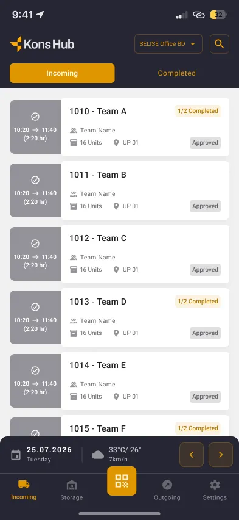
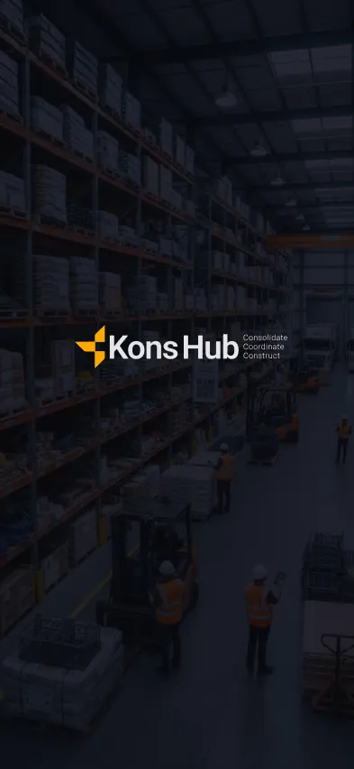
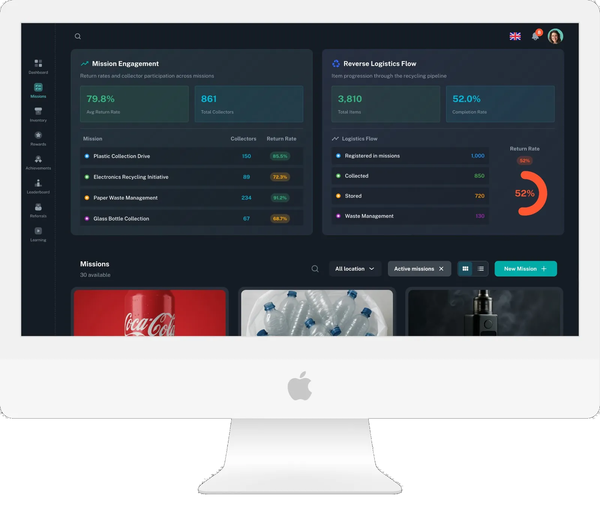

Selected Work · 2016 → now
Work that ships,
and holds up.
Three case studies first: the problem, my role, the decisions and the outcome. Then every project since 2016, one click from its screens.
Featured case studies



Case study 01 · 2019, 2022 → now
One ecosystem, from plan to move-in
Five products for the whole life of a building: LIM plans the site, CLM runs its logistics every day, MoveIt moves people in.
Read the case study


Case study 02 · 2024 → 2025
Designing a habit, not an app
A one-line brief became a five-role recycling product that people come back to: missions, handovers and rewards.
Read the case study
8 hoursBrief to working prototype.
Case study 03 · AI-assisted
From pitch to clickable product in 8 hours
A power-utility brief turned into two working portal prototypes in one day, so the client could try the proposal instead of imagining it.
Read the case studyEvery project since 2016
The archive · contact sheet